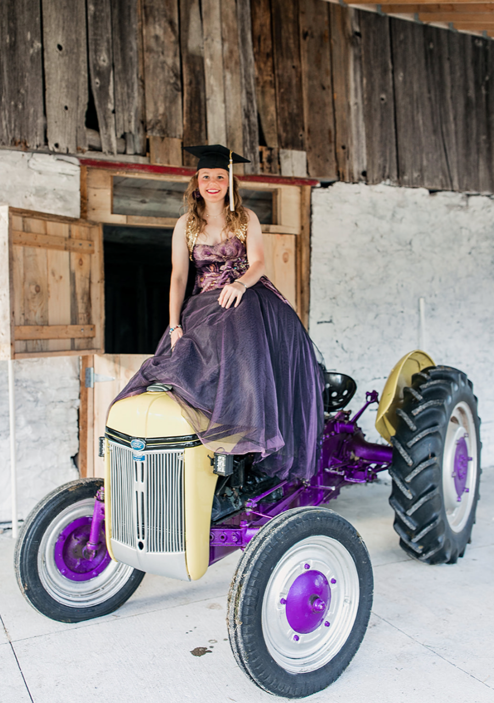
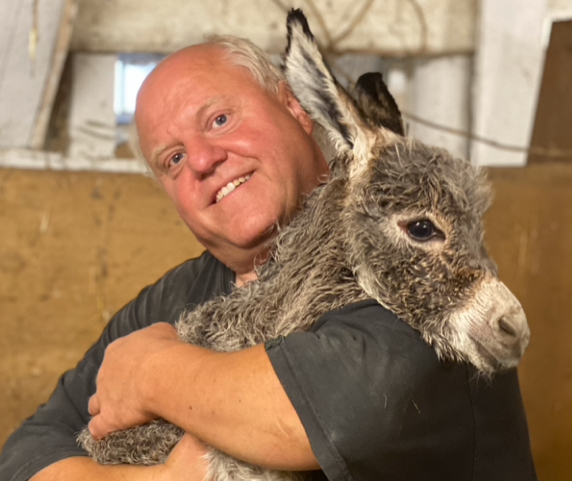
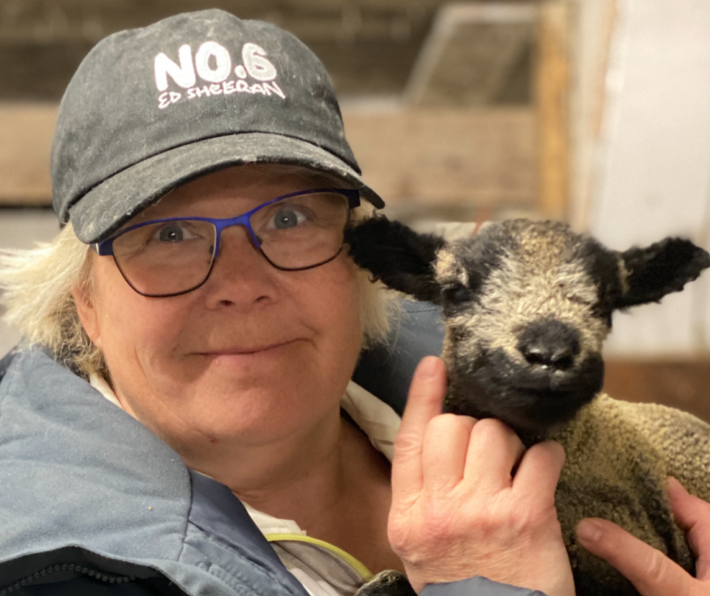
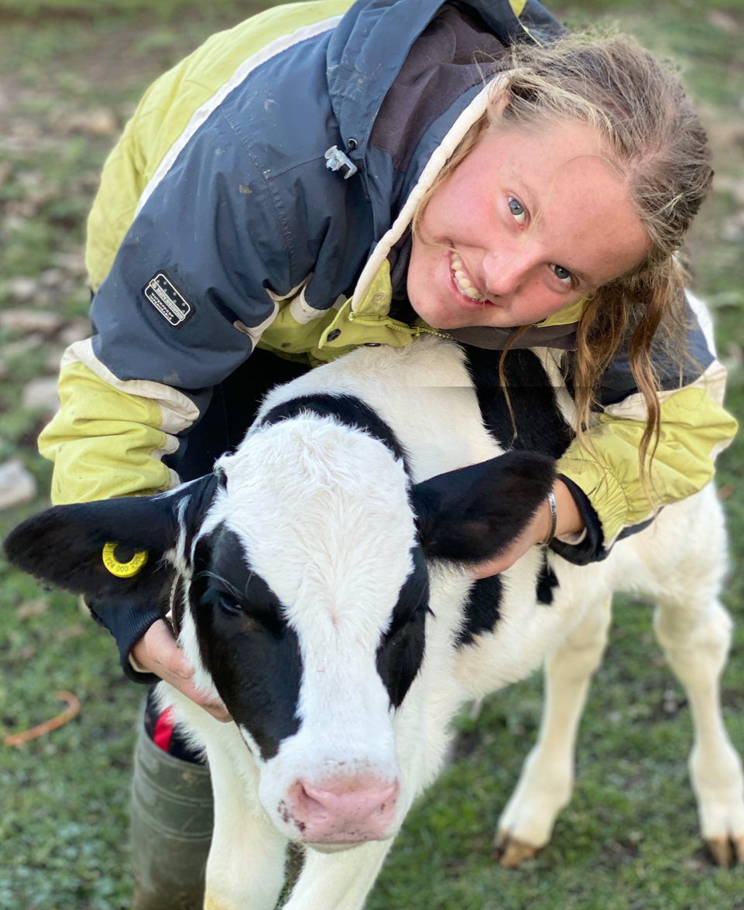

Contact us
    |
Howdy! Thanks for wanting to connect with us. Phone? call or text Karen at (705) 772-9999 By Email? Karen@CritterVisits.CA Karen@CritterVisits.CA By Postal Service? Woolley Wonderland Farm & Critter Visits For Livestock Sales : In the Hamlet of Lakehurst. We’re sorry if you have trouble in finding us! Trent Lakes (formerly Galway-Cavendish-Harvey) Township changed our address number when they changed the name of the township over 5 years ago. They actually had our safety in mind, finally melding the 911 emergency green street numbers with the numbers that the telephone company had on record. With all that, it's sometimes confusing to find us using our address on a GPS or Google maps. We can show as Lakehurst, Trent Lakes or Buckhorn. Be sure you have CIRCLE as part of the street address! |
| © Critter Visits of Woolley Wonderland Farm Inc. 2020 | |